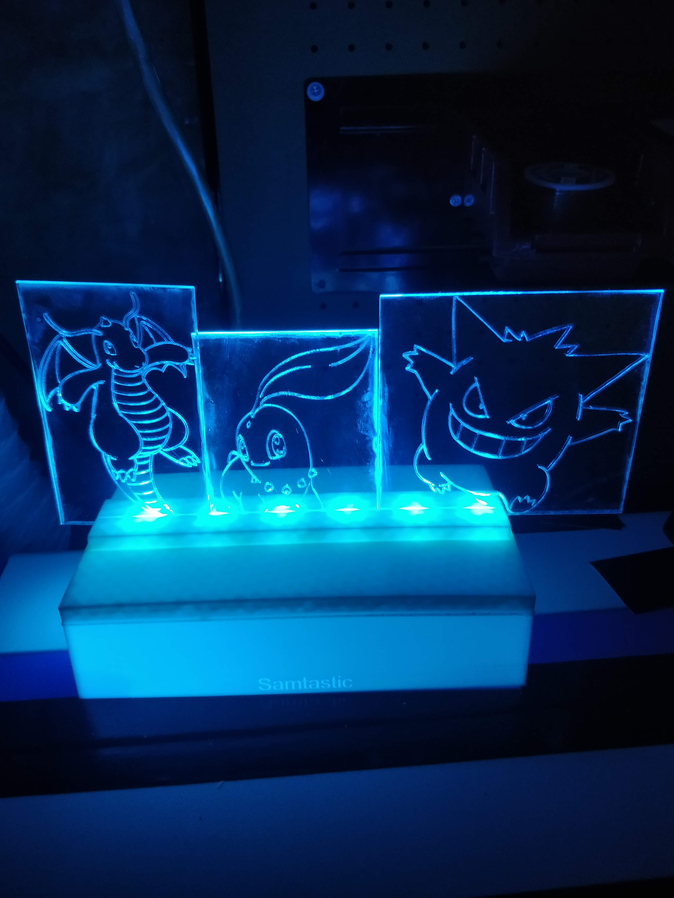
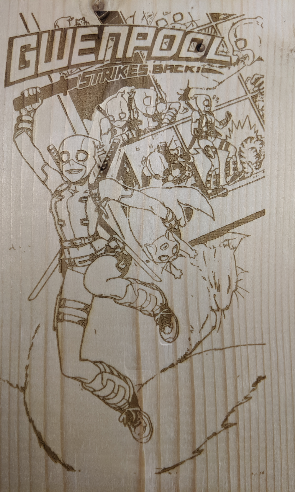

J'ai toujours été très intéressé à comprendre comment les choses fonctionnaient, et dès un jeune âge, je démontais des ordinateurs ainsi que d'autres appareils électroniques (parfois au grand dam de mes parents car je les cassais accidentellement). Cela a finalement porté ses fruits car je suis devenu très à l'aise avec l'électronique, ce qui m'a mené vers cette voie à l'université. C'est là que j'ai découvert le monde des machines CNC ainsi que des imprimantes 3D (que je regrouperais dans la même catégorie que les machines CNC, bien que certaines personnes aiment faire des distinctions). J'ai ensuite acheté l'imprimante 3D de mon instructeur, cette machine m'a tellement intéressé que j'ai fini par construire ma propre graveuse CNC en bois personnalisée en tant que projet de fin d'études avant de décrocher mon diplôme universitaire.
Bien que cela ait commencé comme un jeu amateur avec ces machines, j'ai fini par devenir de plus en plus à l'aise avec elles en m'auto-formant à la modélisation 3D de mes propres créations et à la compréhension du G-Code. En faisant cela, j'ai eu envie d'explorer davantage le monde de la gravure CNC et plus précisément de la gravure au laser. Ce rêve est finalement devenu réalité lorsque j'ai acheté mon propre graveur laser de 40 W.
Au fil des années, j'ai utilisé une combinaison de mon équipement CNC et d'impression 3D, ainsi que de mes connaissances, pour créer non seulement des objets pour moi-même, mais aussi des produits que j'ai vendus à des personnes du monde entier. En plus de cela, j'ai également créé des applications pratiques pour mon lieu de travail.
Comment j'ai commencé à créer des choses
Impressions 3D
Ici, vous trouverez quelques exemples d'impressions 3D que j'ai conçues, et si vous souhaitez en voir davantage, veuillez : cliquer ici pour en savoir plus !

Une conception inspirée par cette image
de Sonic Mania où j'ai conçu
Sonic pour surgir du canevas
de Sonic Mania où j'ai conçu
Sonic pour surgir du canevas

En haut se trouve le capuchon Lux personnalisé
pour les lampes de mineur sur le luxmètre
en dessous se trouve un support de charge de batterie modulaire
pour les lampes de mineur sur le luxmètre
en dessous se trouve un support de charge de batterie modulaire
Gravure/Découpe au laser
Ici, vous trouverez quelques exemples de gravures au laser ainsi que de découpes au laser que j'ai conçues, et si vous souhaitez en voir plus, veuillez :
cliquer ici pour en savoir plus !

Quelques Pokémon gravés dans
une feuille d'acrylique.
une feuille d'acrylique.

Une couverture de comic Gwenpool
gravée dans le bois.
gravée dans le bois.
Électronique
Ici, vous trouverez quelques exemples de projets électroniques sur lesquels j'ai travaillé, et si vous souhaitez en voir plus, veuillez :
cliquer ici pour en savoir plus !

Mon projet final de CNC basé sur une Dremel réalisé à l'université.
Programmation
Ici, vous trouverez quelques exemples de projets de programmation indépendants sur lesquels j'ai travaillé. Si vous souhaitez en voir plus,
Space Ship Goes Pew est un jeu simple de type twin-stick que j'ai codé et pour lequel j'ai créé les éléments graphiques.

Ce code est basé sur le théorème du singe infini, qui stipule essentiellement que si un singe avait un temps infini avec une machine à écrire, il écrirait les meilleures œuvres de Shakespeare. Ce code prend n'importe quel texte saisi et essaie continuellement des touches aléatoires jusqu'à ce qu'il corresponde.